Conference Paper • SIBGRAPI • 2026
Department of Computer Science, Universidade Federal de Viçosa – UFV
The limited availability of annotated medical images remains a major obstacle to segmentation methods, since producing pixel-level labels demands substantial time and expertise from clinical specialists. To mitigate this challenge, this work formulates few-shot medical image segmentation as a self-supervised meta-learning problem, where task adaptation is learned without access to ground-truth masks during training. In this setting, pseudo-labels are generated automatically from unlabeled images, using superpixels and heuristic image cues, and then sparsified to simulate realistic annotation conditions, enabling episodic meta-training under limited supervision. During evaluation, adaptation is performed exclusively from sparse annotations derived from ground-truth masks. Under the proposed framework, it is shown that employing R2D2 as the few-shot meta-learner yields performance comparable to, and in some cases exceeding, that of the main baseline: ALPNet. Importantly, both methods are trained using pseudo-labels and evaluated with ground-truth masks in the target task; nevertheless, the proposed method relies on sparse annotations, in contrast to the dense supervision required by the baseline.
Keywords:
Overview:
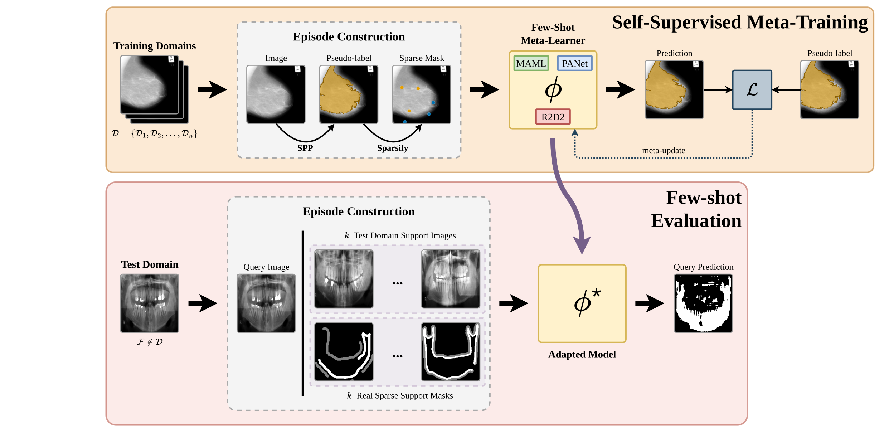
Top: training episodes are built without ground-truth labels. A heuristic over superpixels yields a dense pseudo-label that is sparsified to meta-train MAML, PANet or R2D2. Bottom: the meta-learner adapts to an unseen domain from k real sparse support masks.
Each training image is split into superpixels with SLIC, Felzenszwalb or Watershed, chosen at random. Every region is scored with three modality-agnostic cues: relative brightness, compactness and distance from the image border. A seed is sampled among the four best regions, grown by up to two neighbours and cleaned, giving a dense pseudo-label for a plausible anatomical structure.
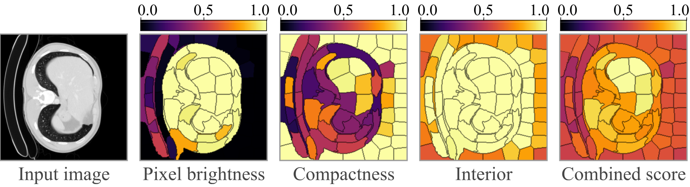
Region scores used to select the pseudo-label.
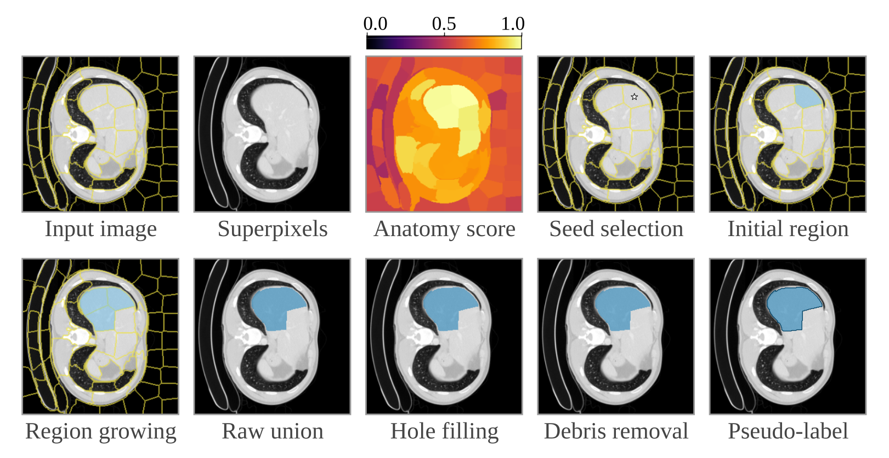
Pseudo-labeling procedure with SLIC superpixels.
The dense pseudo-label becomes a ternary mask (foreground, background, unlabeled) using one of four modes chosen uniformly. Unlabeled pixels are ignored by the loss, a masked combination of BCE (0.4) and Dice (0.6).
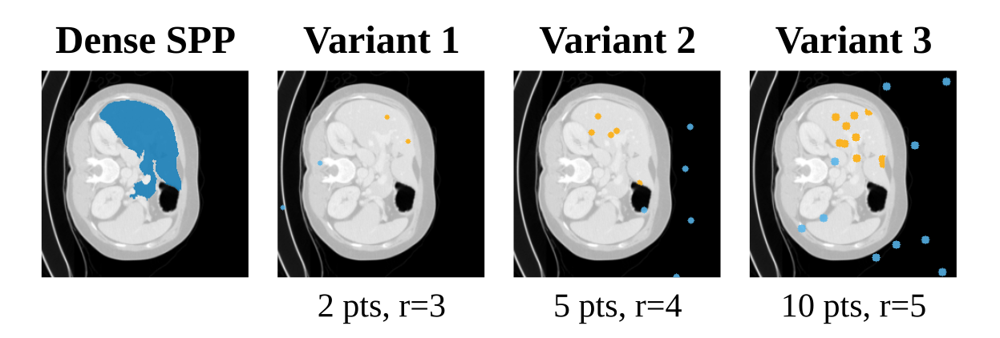
Random points
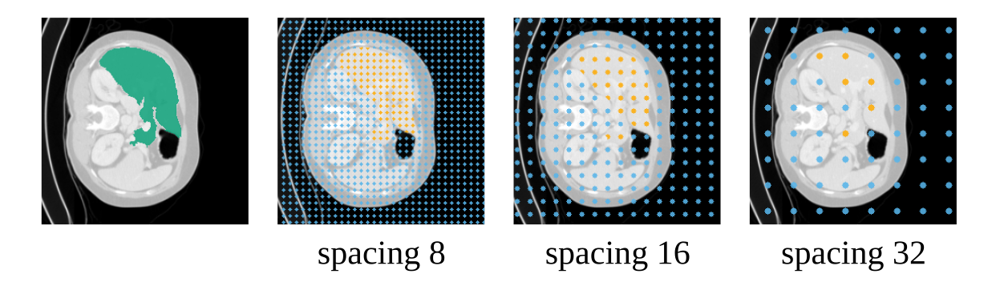
Regular grid
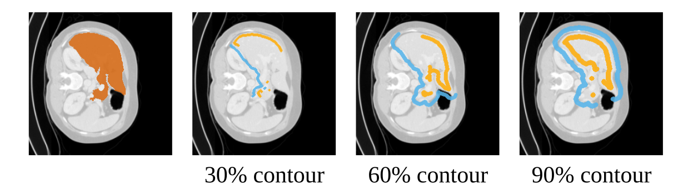
Contour scribbles
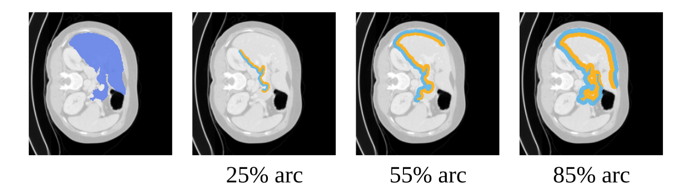
Partial contour
Pseudo-labels are generated independently per image, so each training episode uses a single image: the support holds the sparse pseudo-label and the query the dense one, under the same random geometric transformation. Datasets are sampled in proportion to the square root of their size:
| Method | Type | Support at test time |
|---|---|---|
| MAML / MetaSGD | Gradient-based, first-order, U-Net backbone | sparse |
| PANet | Prototype-based | sparse |
| R2D2 | Differentiable ridge regression, same encoder as PANet | sparse |
| ALPNet (baseline) | Adaptive local prototype pooling | dense |
| Dataset | Modality | Usage |
|---|---|---|
| BraTS 2020 | MRI | Meta-training |
| CHAOS CT | CT | Meta-training |
| HC Pediatric Cerebellum | MRI | Meta-training |
| LiTS | CT | Meta-training |
| MIAS | Mammography | Meta-training |
| Multi-Organ CT BTCV | CT | Meta-training |
| JSRT | Chest X-ray | Few-shot evaluation |
| Panoramic | Dental X-ray | Few-shot evaluation |
For each query image, five support sets are sampled for every k ∈ {1, 2, 3, 5, 7, 10}. Dice scores are averaged per query image and shaded bands are 99% confidence intervals over query images. On JSRT, R2D2 overtakes ALPNet from k = 5 using only sparse supports; on Panoramic, ALPNet stays ahead but the gap narrows as k grows.
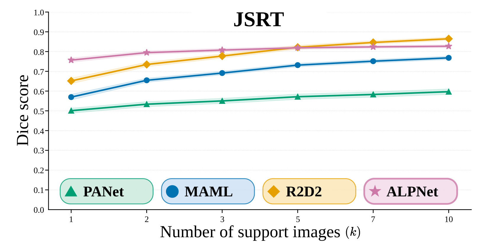
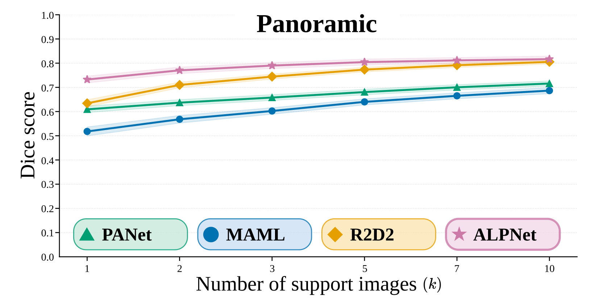
| Method | 1 | 2 | 3 | 5 | 7 | 10 |
|---|---|---|---|---|---|---|
| MAML | 0.570 | 0.655 | 0.691 | 0.731 | 0.751 | 0.768 |
| PANet | 0.501 | 0.534 | 0.550 | 0.571 | 0.583 | 0.597 |
| R2D2 | 0.652 | 0.735 | 0.777 | 0.822 | 0.846 | 0.865 |
| ALPNet† | 0.757 | 0.795 | 0.808 | 0.819 | 0.824 | 0.827 |
| Method | 1 | 2 | 3 | 5 | 7 | 10 |
|---|---|---|---|---|---|---|
| MAML | 0.518 | 0.568 | 0.602 | 0.640 | 0.665 | 0.687 |
| PANet | 0.609 | 0.637 | 0.658 | 0.681 | 0.700 | 0.716 |
| R2D2 | 0.634 | 0.710 | 0.744 | 0.773 | 0.792 | 0.805 |
| ALPNet† | 0.732 | 0.770 | 0.790 | 0.804 | 0.811 | 0.817 |
Columns give the number of support images k. Bold: best result per column. † Dense support masks.
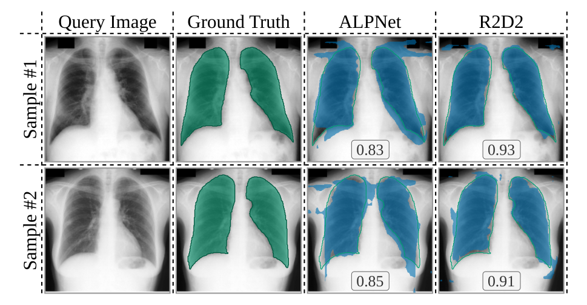
JSRT
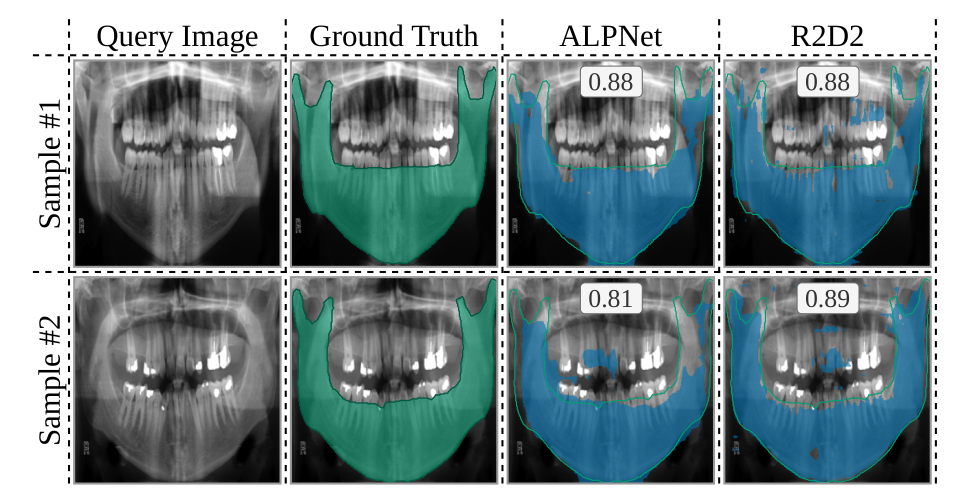
Panoramic
One query image per dataset, with the ten support images, their ground-truth masks (given to ALPNet) and the sparse masks (given to MAML, PANet and R2D2). The first k supports are used for each k.
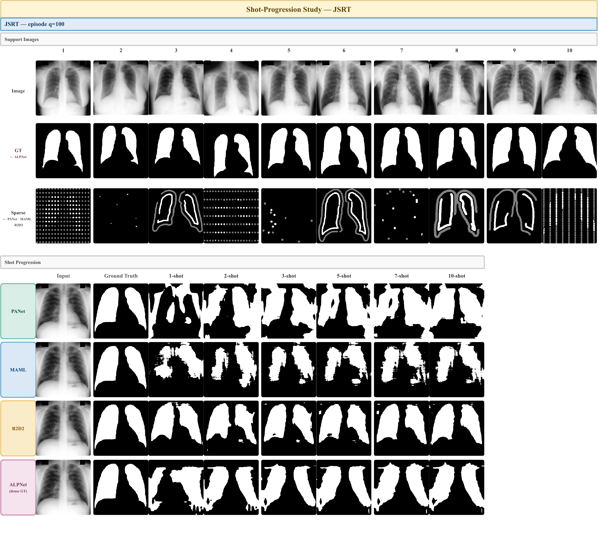
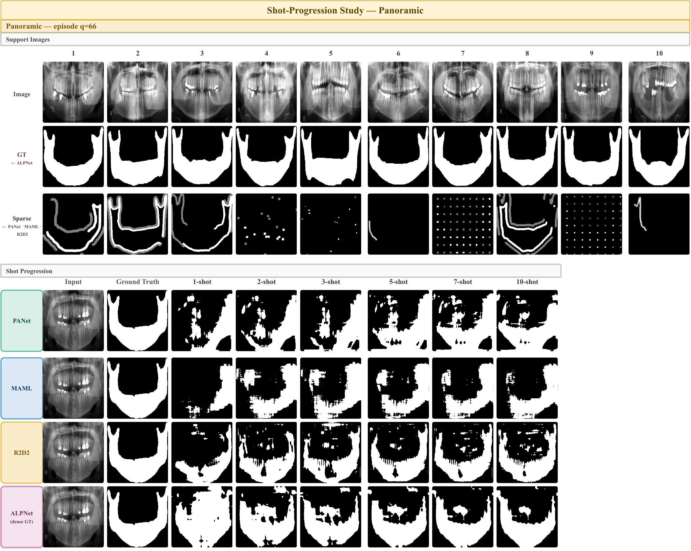
Mean over query images ± half-width of the 99% confidence interval.
| Method | JSRT | Panoramic | ||
|---|---|---|---|---|
| Dice | mIoU | Dice | mIoU | |
| MAML | 0.731 ± 0.009 | 0.693 ± 0.008 | 0.640 ± 0.013 | 0.582 ± 0.011 |
| PANet | 0.571 ± 0.013 | 0.495 ± 0.009 | 0.681 ± 0.011 | 0.568 ± 0.012 |
| R2D2 | 0.822 ± 0.009 | 0.774 ± 0.009 | 0.773 ± 0.010 | 0.681 ± 0.011 |
| ALPNet† | 0.819 ± 0.008 | 0.767 ± 0.008 | 0.804 ± 0.012 | 0.723 ± 0.017 |
Bold: best result per column. † Dense support masks.
Support masks restricted to a single sparsification mode, evaluated on a separate set of episodes. Grids give the best results for every method, and R2D2 is the strongest learner in every mode.
| Method | Points | Grid | Scribbles | Contour | Mixed |
|---|---|---|---|---|---|
| JSRT | |||||
| MAML | 0.676 ± 0.008 | 0.799 ± 0.008 | 0.703 ± 0.010 | 0.596 ± 0.012 | 0.730 ± 0.009 |
| PANet | 0.553 ± 0.013 | 0.604 ± 0.015 | 0.550 ± 0.013 | 0.550 ± 0.013 | 0.569 ± 0.014 |
| R2D2 | 0.738 ± 0.010 | 0.867 ± 0.008 | 0.794 ± 0.010 | 0.760 ± 0.011 | 0.821 ± 0.010 |
| Panoramic | |||||
| MAML | 0.582 ± 0.013 | 0.728 ± 0.011 | 0.615 ± 0.013 | 0.590 ± 0.014 | 0.643 ± 0.013 |
| PANet | 0.676 ± 0.011 | 0.749 ± 0.010 | 0.642 ± 0.012 | 0.681 ± 0.011 | 0.687 ± 0.010 |
| R2D2 | 0.709 ± 0.009 | 0.817 ± 0.009 | 0.769 ± 0.010 | 0.747 ± 0.009 | 0.776 ± 0.010 |
Mean over query images ± half-width of the 99% confidence interval. Bold: best result per column. ALPNet is not included, since it uses dense supports.
@inproceedings{vieira2026selfsupervised,
title = {Self-Supervised Meta-Learning from Sparse Labels for Few-Shot Medical Image Segmentation},
author = {Vieira, Danilo F. and Martins-Costa, Jos{\'e} Roberto and Ribeiro, Marcos H. F. and
Fernandes, Daniel L. and Oliveira, Hugo N.},
booktitle = {Conference on Graphics, Patterns and Images (SIBGRAPI)},
year = {2026}
}